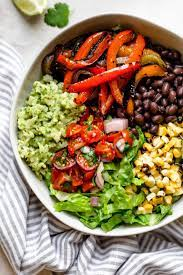

Burrito Bowl
Description
This is a go to alternative burrito bowl for anyone who loves chipotle. It does rquire ordering Chipotle with no rice. You could also purchase your own burrito bowl ingredients, but the recipe will assume you bought the bowl from Chipotle first!
For anyone who has never tried cauliflower rice, I encourage you to give it a shot. It is a low calorie, low carb alternative to rice that doesn't effect the flavor too much.
Ingredients
- Chipotle bowl w/ ingredients of your choosing (except rice!)
- 1 Aldi steamable cauliflower rice pouch
- Tobassco sauce
Steps
- Buy a customized burrito bowl from Chipotle (make sure not to get any rice!)
- Heat up 1 package of Aldi steamable cauliflower rice in the microwave for 5-6 minutes
- Pour cauliflower rice into a large bowl
- Place contents of Chipotle burrito bowl on top of cauliflower rice inside the bowl
- Add Tobassco sauce to the mix and enjoy!!!